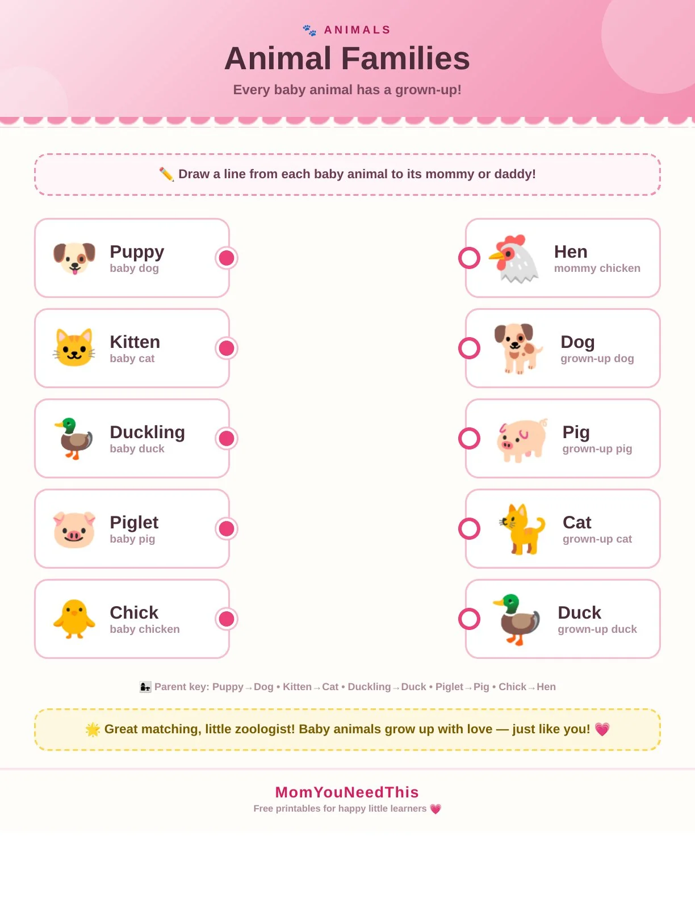

🐶🐱 Animal Families Meet Animal Moms, Dads & Babies
Discover how animal families live, grow and take care of each other. From playful puppies to baby birds in the nest, these sweet activities help little learners explore the animal kingdom through family fun.
Quick Answer
This free printable animal families activity helps toddlers and preschoolers (ages 2–5) match baby animals to their parents and learn the special names animal babies carry: a bear's baby is a cub, a dog's a pup, a sheep's a lamb, a horse's a foal. Kids also discover how animal moms and dads care for their little ones — feeding, carrying, teaching and guarding. Download and print at home with no signup needed.
At a Glance
- Ages: Toddlers and preschoolers (ages 2–5)
- Activity: Matching baby animals to their parents
- Skills: Animal family names and matching
- Format: Printable worksheet (PDF)
- Cost: Free, no signup
Animal families are the topic where a child's own life becomes the textbook: babies need feeding, carrying, keeping warm and being taught — and every species on this page solves those jobs differently. The matching is the game; the comparing is the education. A child who asks “but who carries the kangaroo baby?” is doing zoology.
🐶🐱 Explore Animal Families
Match baby animals to their parents, learn animal family names, and discover how animal moms and dads care for their little ones.
💡 How To Use This Activity
Print the family pages and start with the animals your child knows best: match each baby to its mom before moving on to trickier families. Talk about who takes care of whom as you play, and finish by asking which animal family is most like yours — and who plays which part. The print button opens the full-size page in a new tab if you prefer to print from there.

🖨️ Download Your Free Animal Families Printable
Match baby animals to their parents, learn animal family names, and discover how animal moms and dads care for their little ones. Print it out, grab the crayons, and you're ready — no signup needed.
⬇️ Download Free Printable 🖨️ Print🎁 Free printable for toddlers & preschoolers
🐣 Baby Animals Have Names Too
Cub — bears, lions, tigers. Born tiny and blind, raised on milk and patience; a lion cub joins a whole pride of aunties who help raise it.
Pup — dogs, wolves, seals, bats (yes, bat babies are pups). Wolf pups are fed by the whole pack bringing food back — dinner delivery is a family value.
Kitten — cats, and also rabbits (whose babies are kits). A mother cat carries kittens by the scruff, one at a time, moving house with her mouth.
Calf — cows, elephants, whales. The largest babies on the list: a blue whale calf is born the length of a car and drinks bathtubs of milk a day.
Lamb, kid, chick, foal — sheep, goats (a baby goat is a kid, which children find hilarious and correct), chickens, horses. A foal can stand within the hour — prey animals are born in a hurry — while a chick arrives with its own packed lunch: the yolk it finishes absorbing before it hatches.
And the fathers deserve their paragraph: a seahorse dad carries the babies in his own pouch; an emperor penguin dad incubates the egg on his feet through the Antarctic winter, fasting for months; a wolf dad delivers dinners for a year. Animal families, like human ones, divide the work every way imaginable.
❓ Animal Families FAQs
What activities are included in Animal Families?
This page collects our free animal families printables in one place: matching baby animals to their parents, learning animal family names (cub, pup, kitten, calf, lamb, foal), and discovering how animal moms and dads care for their little ones. Download the printable below and start learning right away.
Are these activities really free?
Yes — every printable on MomYouNeedThis is 100% free to download and print. No signup, no payment, just tap the download button. Start with the animals your child knows best — the family dog is a legitimate first lesson in pups. Start with the animals your child knows best — the family dog is a legitimate first lesson in pups.
How do I use these activities with my child?
Print the family pages and start with the animals your child knows best: match each baby to its mom before moving on to trickier families. Talk about who takes care of whom as you play — who feeds, who carries, who teaches — and let your child spot the parallels with their own family. The parallels are the point, and children never miss them.